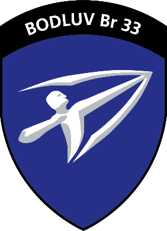
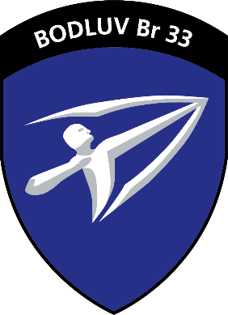

Bildungs- und Kompetenznachweis
Die Schweizer Armee bestätigt hiermit, dass
{{User.FirstLastName}}
geboren am {{User.Birthdate | Date: "dd.MM.yyyy"}} die folgende militärische Dienstleistung absolviert hat:
| Militärdienst bei: |
{{User.Text1}} |
| Zeitraum: |
{{DateAcquired | Date: "dd.MM.yyyy"}} - {{ValidUntil | Date: "dd.MM.yyyy"}} |
| Funktion: |
Luftwaffensoldat Beobachtung |
| Grad: |
Soldat |
Ich danke Soldat {{User.FirstLastName}} für sein Engagement zugunsten der Schweizer Armee und wünsche ihm
für seine zukünftige berufliche Tätigkeit viel Erfolg und Zufriedenheit.
Bodengestützte Luftverteidigungsbrigade 33

Brigadier Peter Soller
Kommandant
Dieser Bildungs- und Kompetenznachweis ist transparent und enthält somit keine versteckten Informationen
Er hat während der Rekrutenschule in Theorie und Praxis folgende Kompetenzen erworben:
| Kompetenzen |
Inhalt / Anwendungsbereich |
|
Eigenverantwortung
|
Durch das Zusammenleben in seiner militärischen Einheit musste er Verantwortung für sich und andere
innerhalb der Gruppe übernehmen.
|
|
Loyalität
|
Während der Dienstdauer lebte er nach gemeinschaftlichen Werten, sozialen Normen sowie
gruppenspezifischen Regeln.
|
|
Belastbarkeit
|
In der Rekrutenschule durchlebte er Phasen erhöhter physischer sowie psychischer Belastung. Er hielt
diesen erschwerten Bedingungen stand und konnte sich auf das Wesentliche fokussieren.
|
|
Lern- und Anpassungs-fähigkeit (Flexibilität)
|
Dank seiner Lern- und Anpassungsfähigkeit integrierte er sich in ein für ihn ungewohntes Umfeld.
|
|
Kritik- und Konfliktfähigkeit
|
Unter erhöhtem physischem und/oder psychischem Stress war Kritik- und Konfliktfähigkeit gefragt.
|
|
Teamfähigkeit
|
Gemeinsame Aufgaben, Ziele und Erlebnisse stärkten die gegenseitige Rücksichtnahme und
Wertschätzung.
|
|
Sozialkompetenz
|
Menschen unterschiedlicher Herkunft, Sprache, verschiedener Kulturen, Geschlechter, Religionen sowie
sozialer Stellung begleiteten ihn während seiner Dienstzeit und forderten/förderten seine
Sozialkompetenz.
|
|
Fachtechnische Kompetenzen
|
|
Er hat in der Fachausbildung folgende Module absolviert:
- Ausbildung zur Bereitstellung und zum Betrieb an den mobilen Kommunikationssystemen (Funk)
- Flugzeugerkennungsdienst
- Ausbildung am Radarsystem für die Luftbeobachtung
- Ausbildung im Umgang mit dem zugewiesenen, sensitiven Material
- Grundlagen in der Zubereitung von einfachen Haupt- und Nebenmahlzeiten sowie der Lebensmittelhygiene
Zu seinem Aufgabenbereich gehörten folgende Tätigkeiten:
- Die Betriebsbereitschaft und die Feuerbereitschaft der Fliegerabwehrlenkwaffen Beobachtergruppe in den verschiedenen Chargen zu erstellen und im 24-Stundenbetrieb zu betreiben
- Als Teil der Fliegerabwehrlenkwaffengruppe den Betrieb des Radarsystems für die Luftbeobachtung sicherstellen, die vorgegebenen Bekämpfungsabläufe anwenden und den Standardverhalten zu folgen
- Durch Präzisionsarbeit den Aufbau und Betrieb des zugewiesenen Standortes sicherstellen
- Lagerung, Kontrolle und Bewirtschaftung des Materials im eigenen Bereich
- Die Funkverbindungen gemäss Checkliste erstellen, betreiben und unterhalten
- Die Sicherung und den Schutz von Mensch und Material am zugewiesenen Standort gewährleisten
Im Rahmen der Selbst- und Kameradenhilfe hat er die Ausbildung zum Nothelfer erhalten.
Die Schweizer Armee führt in regelmässigen Abständen PersonensicherheitsÜberprüfungen durch. Bei
der ersten Überprüfung zum Zeitpunkt seiner Rekrutierung hat er die Sicherheitsprüfung
bestanden.
|